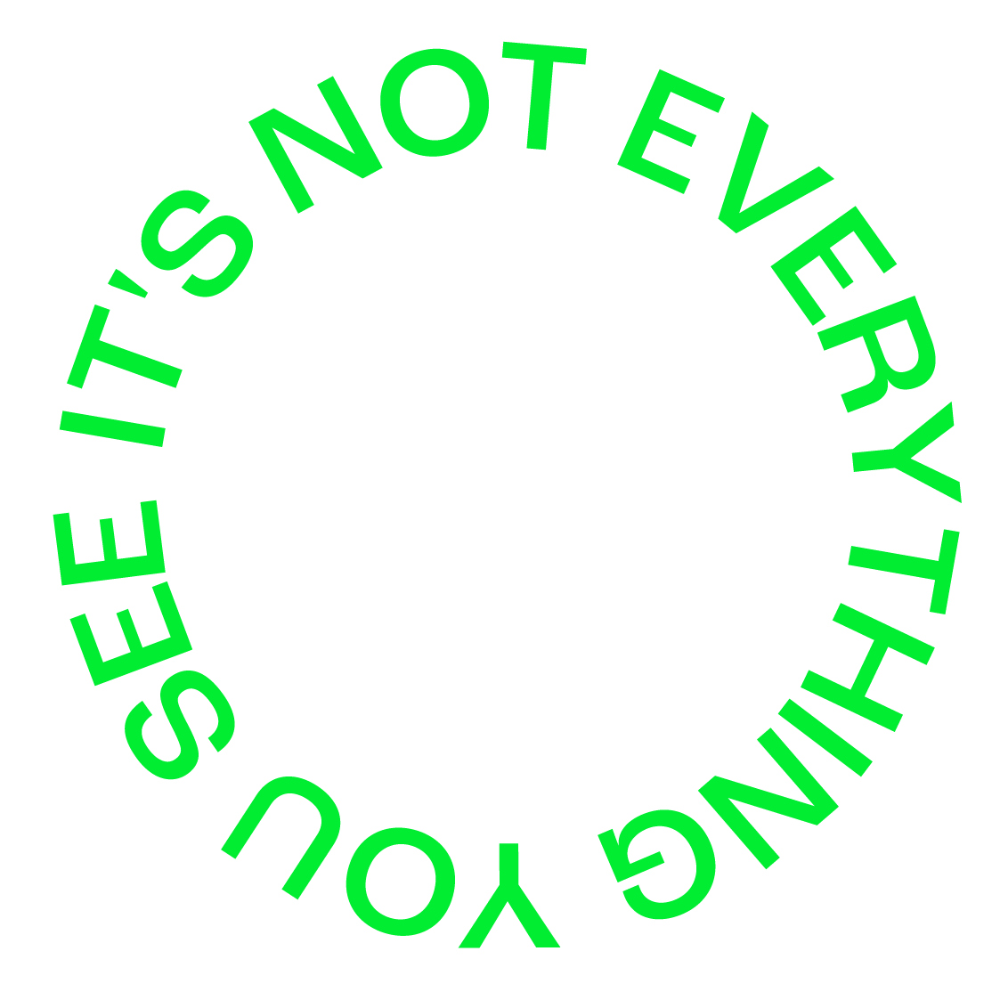

피로사회에 대한 고찰
나는 존재하지 않는다. 나는 타자로서 존재한다. 이 사회는 자신의 존재 이유를 타자를
통해 인식하고자 하는 경향이 있다. 자신이 정한 자아상과 타자가 보는 내가 일치하기를
바라는 것도, 누군가를 쉽게 판단하고 분류하는 것이 자연스러워진 것도. 그만큼 우리가
사는 이 사회가 피로하다는 증거다. 누군가가 나에게 피로 사회가 무엇이냐고 묻는다면,
나는 '존재에 대한 질문을 던지지 않는 사회'라고 말해줄 것이다. 인간이란 존재에 관한
물음이나 인간은 무엇을 위해 사는지와 같은 실존적인 물음에 대해 사유하는 시간을 갖지
않는 이 사회야말로 모두가 피로한 사회 즉, '피로 사회'라고 생각한다.
과학기술의 발달로 모든 것이 풍요로운 세상에서 아직도 우리에게 빈곤한 것이 있다면
사색하는 시간, 다시 말해 깊은 심심함을 즐기지 못하는 것이다. 모두가 감각적인 즐거움만
추구한 채, As soon as possible (가능한 한 빨리) 만을 외치고 있다 보니 심심함을 즐기
지 못하는 지경에 이르렀다. 아무것도 하고 있지 않으면 뭔가 뒤처지는 것 같고, 당장 일어
나서 뭐라도 해야만 할 거 같은 느낌이 들고, 정작 시간적 여유가 생겨도 다시 뭘 해야만 할
것만 같은 생각이 든다. 여기에 SNS도 한몫한다. SNS 속 아름답게 포장된 다수를 엿보며
그들과 자신을 비교하며 구분하고 계급화하는 본인의 모습을 당신도 알고 있지 않은가.
피로한 사회의 세태를 알리기 위해 준비한 <피로연>이라는 전시의 큰 주제를 두고, 나는
피로 사회를 살아가고 있는 한 개인으로 긍정으로 포장된 이 사회에서 얻어지는 질환의
형태를 그래픽 디자인의 관점으로 표현하고자 하였다. 나의 전시를 보는 사람들이 내가
처음 피로 사회를 인식했을 때와 같은, 새롭지만 낯설지는 않은 이 감정이 잘 공유되기를
소망해본다. 그리고 긴 글을 읽어주심에 감사함을 표한다.
